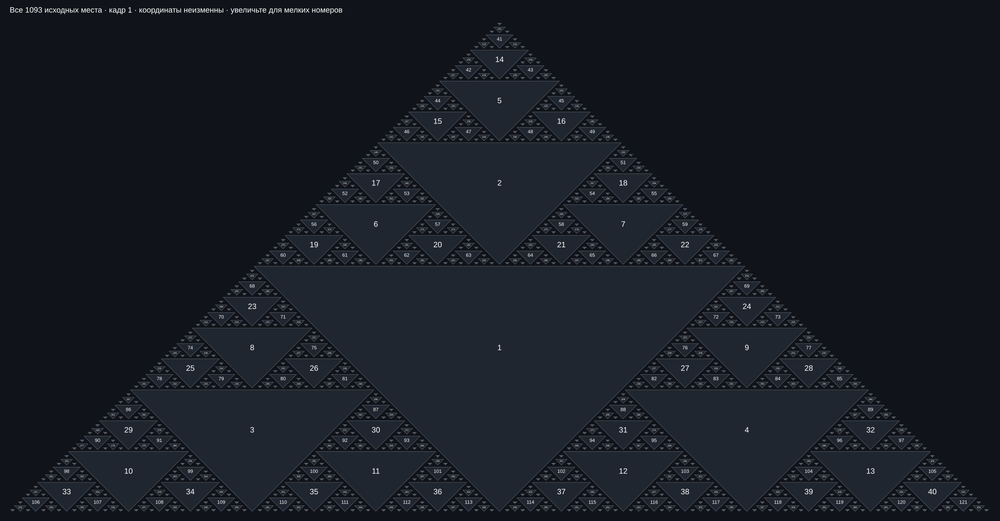

Оси, зеркала и раскраска
Схемы и порядок действий для новых инструментов Маятника. Начните с обозначений секторов, затем выберите направление зеркала.
Секторы креста
На узком экране прокручивайте схемы по горизонтали, чтобы прочитать подписи.
В «Осях» включите «Секторы креста». Буквы обозначают области, цифра 1 — левую сторону, 2 — правую. Заглавная А и строчная а относятся к разным областям.
- А1 · А2
- Над горизонталью, между вертикалью и диагоналями.
- Б1 · Б2
- Над горизонталью, снаружи верхних диагоналей.
- а1 · а2
- Под горизонталью, между вертикалью и диагоналями.
- б1 · б2
- Под горизонталью, снаружи центральных диагоналей.
- С1 · С2
- Внешние нижние области за наклонными линиями, идущими от краёв поля.
Сами линии — границы, они не принадлежат сектору. Если вертикаль закреплена или смещена, её положение может отличаться от центра диагоналей. Подписи следуют реальной геометрии.
Зеркала по крестам
Откройте «Зеркала → Зеркала крестов», выберите направление и включите отражение. Ниже показан один крест. Цвета на схеме обозначают источник каждой области; фактура взята из настоящего поля.
Отражения всех крестов читают один исходный снимок. Поле и слой краски остаются прежними, меняется показанный результат. При выборе сектора программа ищет точную клетку-источник: пустое место или координата между клетками не округляются. Такие пиксели остаются прежними. Внешние С1/С2 могут заполнить лишь часть остальных областей.
Зеркала крестов работают в плоском виде при масштабе внутренней решётки 1:1. Если выбран несовместимый вид, Маятник объясняет причину в подсказке.
Карта 1093 мест
В «Осях» выберите источник «Карта 1093». «Оси карты» строят вертикальные отрезки между перевёрнутыми треугольниками: от нижнего острия верхнего до верхнего основания следующего. Последний отрезок идёт до низа поля.

- Маска узора
- Разрешает новую раскраску в узоре между треугольниками. Сами треугольники становятся преградой для распространения заливки; ранее нанесённая краска сохраняется.
- Зеркала ▼
- Ставит горизонтальное зеркало по верхнему основанию каждого треугольника. Само основание остаётся на месте; все отражения берут исходный снимок без последовательного повторного отражения.
- Автооси ▼
- Отдельный поиск пустых треугольников текущего поля. Это другой источник, не исходная карта 1093 мест.
Исходная карта относится к Маятнику на пустом поле с 512 строками, без пары. Несовместимые построения показывают пояснение вместо неподходящих осей.
Оси появляются и исчезают по времени
Переключите источник карты на «По времени», оставьте «Оси карты» включёнными и меняйте кадр. Геометрия берётся из таблицы измерений именно этого кадра, включая обе решётки A и B. Маска и зеркала ▼ следуют тому же выбранному источнику.
В измеренных кадрах 1–179 есть отслеживаемые треугольники; в 180–500 их уже нет. После 500 данных нет: программа сообщает об этом и не продолжает траектории по предположению.
Раскраска от осей
- Покажите нужные найденные, N-оси, автооси или оси карты.
- В «Раскраске» настройте цвет инструмента «От осей», правило области и зеркальность.
- Нажмите «От осей». Участвуют все показанные оси, а не только выделенная.
- Одно нажатие «Отмена» возвращает краску до всей операции.
При включённой маске карты заливка не проходит сквозь треугольники. Ось вдоль границы клеток берёт соседние клетки по обе стороны; одно касание угла не добавляет клетку. Повтор тем же цветом не стирает результат.
Свой цвет каждой группы
Цветная точка у инструмента открывает его собственный цвет. «Заливка», «От осей», «Столбы», «Проход», оба цвета «Центра», «Авто» и «Рост» сохраняют настройки независимо. В «Точке Оси» у «Точки» и «ТочкиОси» тоже отдельные цвета. Автоматическая смена цвета по построениям или кадрам настраивается для каждой цветной точки отдельно.
«Авто: палитра» переключает многоцветный цикл и один выбранный цвет. Авто не меняет цвет ручной заливки. «Рост: свой цвет» задаёт цвет только новой краски; при выключении рост продолжает цвета своих источников. В «Сбросе цветов» выбирается одна группа: её цвет и автоматическая смена возвращаются к стандарту, остальные сохраняются.
Видимость линий
В «Осях» доступны две палитры: фиолетовый/чёрный и фиолетовый/красный. Штрихи двух цветов соприкасаются без прозрачных зазоров. Эта настройка меняет линии, а не краску поля.
Весь холст или одно лицо
Вид → Вверх ногами поворачивает весь холст на 180° вместе с линиями и подписями. Меню остаются на месте.
Чтобы перевернуть отдельное лицо, в «Ячейках» включите выделение и обведите его прямоугольным фрагментом. 180° меняет верх с низом и левую сторону с правой; Верх ↔ низ меняет только верх с низом. Содержимое за границами выделения сохраняется. Действие можно отменить. Фрагмент сохраняется вместе с текущим кадром; переворот доступен в плоских CPU-видах.
Л · П
Л · П
Л · П
Вернуться к стандарту
Очистка → Всё сразу выключает дополнительные инструменты и эффекты, возвращает чёрно-белый Хорр 512, масштаб по оси и положение Вверх. Отдельные сбросы находятся в своих группах. Сохранённые материалы библиотеки остаются.
В Мерить → Рзмер\счёт собраны два независимых включателя: размеры линий и счёт битов.
Скачать библиотеку
Можно сохранить один элемент, отмеченные элементы, один раздел или всю библиотеку. Разделы: шаблоны, слои, кадры, настройки и последовательности. Выберите скачивание архивом или в папку; отмена выбора папки отменяет экспорт.
Выгрузка сохраняет исходные материалы и параметры восстановления. Сам экспорт ничего не удаляет из библиотеки.